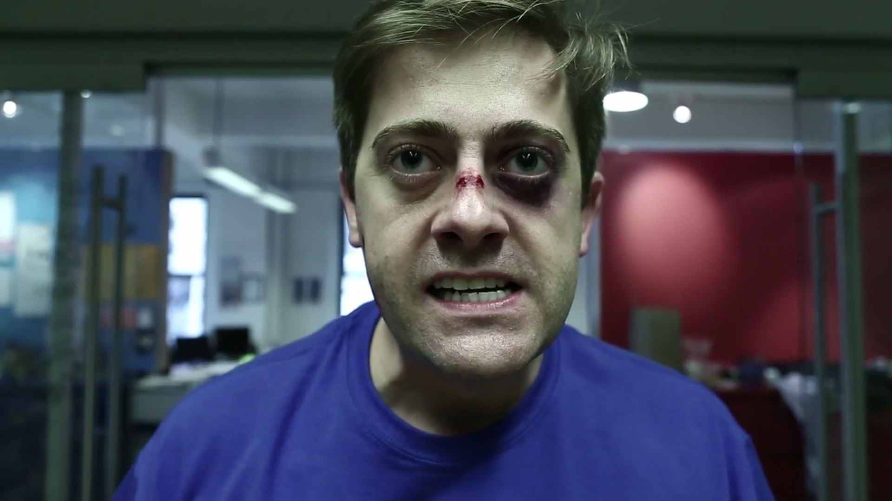
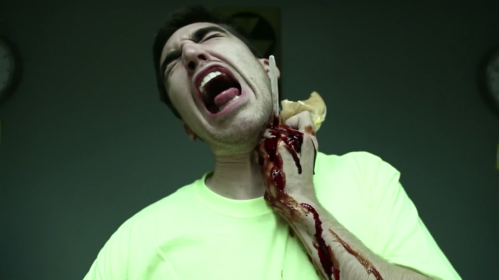
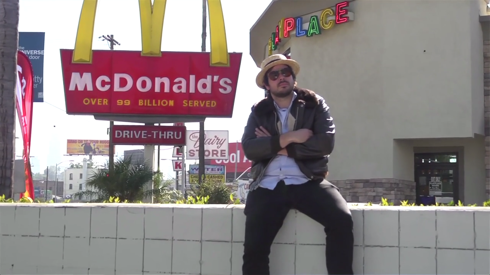
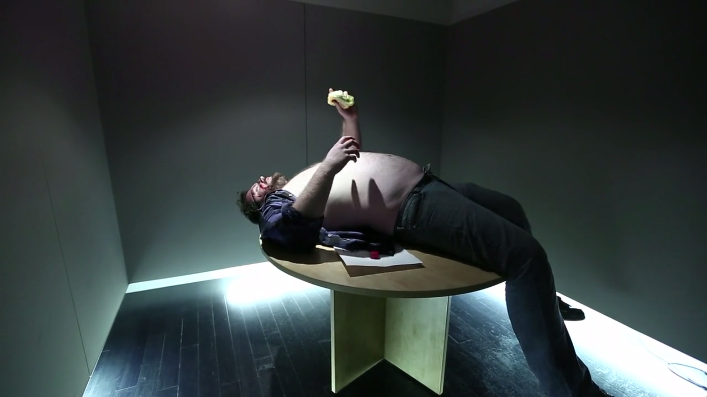

FOR RELEASE October 28, 2013
Media Contact: Brandon Gulya (brandongulya@gmail.com)
NEW YORK, NY — Whale Thief, a sketch comedy group from the Upright Citizen's Brigade Theatre in New York, announced today the successful production of an entire feature-length film in a single day. On October 19th the group organized an event called "Movie Cram," in which a team of over 100 writers, directors, actors, producers, artists and musicians worked together to write, shoot, edit and premiere a feature-length comedy film in a single 24-hour period. Initial production began at midnight the morning of October 19th, and the final product was screened at midnight the following night in front of a sold-out live audience at the UCB Theatre in New York, NY. Although not yet official, this is a world record.
At midnight the morning of the 19th a group of writers from the Upright Citizens Brigade Theatre and its surrounding community assembled and began pitching ideas for a comedy film. As a group the writers' credits ranged from independent live comedy shows to network television, but they had never worked together as a team before. Over the course of the next three hours, an original movie idea was selected by group consensus. The selected idea was then fleshed out, riffed on, and eventually formed into the shape of a traditional storyline. Overnight, the story was divided into scenes which were assigned to various writers. After a single table read and re-write around dawn, the final script was assembled and production began.
Around 10 a.m., a flood of directors and producers arrived on the scene to learn about the movie they would be shooting that day. While the directors read through the film for the first time, the film's many parts were being assigned to actors in another room, with the same roles given to over a dozen different actors. A large order of solid colored t-shirts were divvied up, with each of four colors representing a different main character, to be worn by whichever actor played them on-camera.
Having read the entire screenplay and received their assignments, each director then waded through a sea of over 75 actors, calling out names and finding the actors assigned to them. Once assembled, the teams headed out to shoot their scenes.
Each production team's task was to complete their scenes, edit them, and deliver them to the UCB Theatre in the Chelsea neighborhood of New York in time for them to be assembled and shown to a sold-out audience of comedy fans that night at midnight. Whale Thief was fully prepared to fill in any gaps in the film by performing those scenes live on stage in place of any missing videos. But remarkably, all 19 production teams were able to complete and deliver their scenes in time - although in many cases, not a moment too soon.
The UCB Theatre was packed to the walls with comedy fans who seemed as excited to find out whether the feat had been accomplished as they were to view the resulting movie. The film itself received a response that was nothing short of thunderous.
The film, entitled "A New McDonald's," was executive produced by Whale Thief, which consists of Benjamin Apple (Late Night with Jimmy Fallon, UCB), Brandon Gulya (MTV's Two Guys Named Josh, The Food Network, Official Bonaroo Announcement with Weird Al Yankovic, UCB), Matt Klinman (Adult Swim, The Onion, UCB), Matt Mayer (NickMom, The Onion, UCB), and Zack Poitras (The Onion, Pangea, UCB). Along with them were 12 writers, 19 directors, and 76 actors. Factoring in editors, production assistants, musicians responsible for creating the original score of the film, and many other volunteers, the project has well over a hundred names in its credits.
Whale Thief has since realized that the extremely short production time for this movie accidentally qualifies it for a World Record, beating a few other films that hit around the 11-day mark. No Guinness World Record people were around to verify it because, truthfully, this was never a goal. But, nonetheless, the event was well-documented and had lots of witnesses.
Whale Thief are currently submitting the film for various film and comedy festivals across North America. A screener link is available for press. Please contact Brandon Gulya with questions and requests.